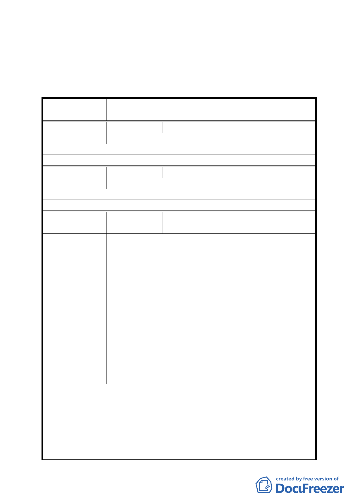

平方公尺，其餘照案通過。
二、有關公民或團體陳情意見決議情形詳如綜理表。
臺北市都市計畫委員會公民或團體所提意見綜理表
案名
編號
陳情理由
建議辦法
委員會決議
編號
陳情理由
建議辦法
委員會決議
編號
陳情理由
建議辦法
變更臺北市中山區長春段二小段 559-5 地號等道路用
地、第三種住宅區為第三種住宅區及綠地計畫案
１ 陳情人 黃展輝
變更綠地對社區居民效益不大。
變更為機關用地，設置圖書館及區民活動中心。
本案仍以劃設綠地供公眾使用為宜。
2 陳情人 黃玉枝
綠地會圖利建商。
變更為圖書館或活動中心。
同編號 1。
3
陳情人
華固建設股份有限公司（本更新事業案實
施者）
市府刻正大力推動都市更新，本案如依照目前法定程序
申請建照，除辦理期程長，尚有細部計畫變更後面積與
土地登記面積不符情事，詳如下列說明：
1.目前細部計畫變更至建造執照申請辦理程序冗長
程序上需先辦理細部計畫變更，待細部計畫變更核定公
告後，方可辦理都市計畫樁位測釘、地籍分割等作業，
至請領建造執照需費時約七個月。
2.細部計畫變更後面積與土地登記面積不符
先辦都市計畫樁位測釘作業與後續辦理地籍分割作業
之間面積套疊，實有測量作業上無可避免之誤差，致使
細部計畫變更後基地登記面積與更新事業計畫書內所
載基地面積不一，恐影響建築容積計算，甚需辦理變更
都市更新事業計畫及權利變換計畫書，嚴重延宕更新時
程。
1.建議於本案細部計畫變更內容內載明變更後都市計畫
土地使用分區以分割地籍線為準，可免都市計畫樁位測
釘及公展程序，也避免細部計畫變更後面積與土地登記
面積不一情事。
2.本案之都市更新概要計劃業於民國 91 年 5 月 20 日通
過，四年多來經實施者與更新範圍內相關權利人共同努
力下，終於完成本案更新事業及權利變換計畫之審議，
八